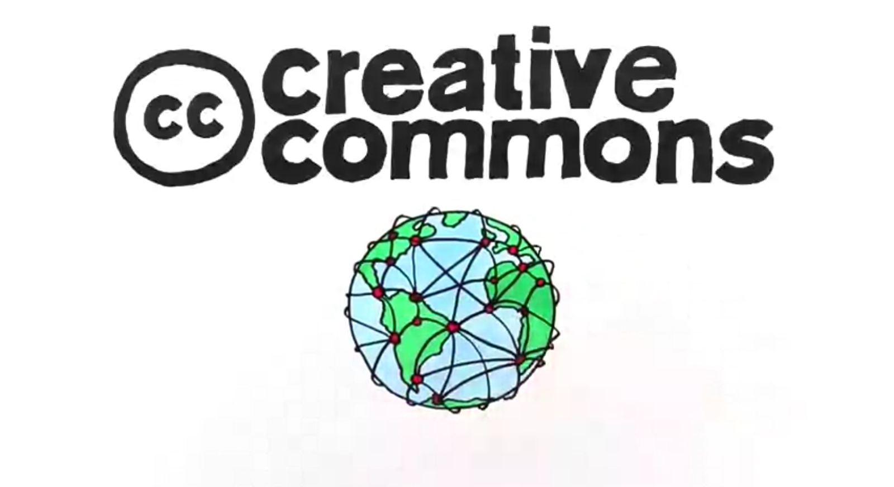

Anatomía de una licencia Creative Commons
Creative Commons Aotearoa New Zealand, Creative Commons world network, CC BY 3.0 NZ
{kind=link}
Las tres capas de una licencia
Legible por máquinas
Todas las licencias tienen una capa legible por máquinas (software). Esto facilita detectar si una obra utilizada en la web está utilizando una licencia CC.
Cesiones comunes
Esto es un resumen de un texto legal, es legible por humanos (sencillo y directo). Muestra las condiciones básicas de la licencia. No se puede presentar ante un tribunal.
Código legal
El código legal es la capa del diseño dedicada al texto que podría ser presentado ante un tribunal o ante una infracción de los términos y condiciones de la licencia.
Elementos de una licencia CC

Atribución
Todas las licencias Creative Commons tienen esta condición: la obra debe ser atribuida a su creador original. ¡Atribuir es sencillo!

CompartirIgual
Esta condición obliga al reutilizador a compartir y utilizar la obra con la misma licencia. ¡El reutilizador no tiene derecho a cambiar la licencia!

SinDerivadas
Las licencias (dos de las seix) con esta condición especifican que no puedes realizar una obra derivada, por ej. no puedes modificar una imagen bajo esta condición. Pero, ¿cuándo se considera una adaptación?

NoComercial
Las tres licencias con esta condición no permiten utilizar la obra con fines comerciales, lo que significa que el usuario no puede ganar dinero utilizando o vendiendo la obra, sea un particular, una empresa, una asociación, etc. Comprueba este recurso de Creative Commons para conocer argumentos a favor y en contra de esta condición.
Paquete de licencias CC
El paquete de licencias CC está compuesto por licencias que mezclan los elementos vistos en la anterior diapositiva. Con estos elementos ha desarrollado un paquete de licencias que puede ser útil en muchos casos.
CC BY

- Puedes copiar y distribuir la obra en cualquier medio o formato.
- Puedes mezclar, adaptar y elaborar otras obras a partir de la obra licenciada.
- Puedes utilizar con cualquier fin, incluso comercial.
- Atribuir la obra a su creador original adecuadamente, indicando si has realizado algún cambio y proporcionando un enlace a la licencia.
¿A qué obliga?
CC BY-SA

- Puedes copiar y distribuir la obra en cualquier medio o formato.
- Puedes mezclar, adaptar y elaborar otras obras a partir de la obra licenciada.
- Puedes utilizar con cualquier fin, incluso comercial.
- Atribuir la obra a su creador original adecuadamente, indicando si has realizado algún cambio y proporcionando un enlace a la licencia.
- Debes distribuir las obras derivadas (mezclas, transformaciones u otras obras a partir de la licenciada) con la misma licencia.
¿A qué obliga?
CC BY-NC

- Puedes copiar y distribuir la obra en cualquier medio o formato.
- Puedes mezclar, adaptar y elaborar otras obras a partir de la obra licenciada.
- Atribuir la obra a su creador original adecuadamente, indicando si has realizado algún cambio y proporcionando un enlace a la licencia.
- No puedes utilizar la obra para fines comerciales.
¿A qué obliga?
CC BY-NC-SA

- Puedes copiar y distribuir la obra en cualquier medio o formato.
- Puedes mezclar, adaptar y elaborar otras obras a partir de la obra licenciada.
- Atribuir la obra a su creador original adecuadamente, indicando si has realizado algún cambio y proporcionando un enlace a la licencia.
- No puedes utilizar la obra para fines comerciales.
- Debes distribuir las obras derivadas (mezclas, transformaciones u otras obras a partir de la licenciada) con la misma licencia.
¿A qué obliga?
CC BY-ND

- Puedes copiar y distribuir la obra en cualquier medio o formato.
- Puedes utilizar con cualquier fin, incluso comercial.
- Atribuir la obra a su creador original adecuadamente, indicando si has realizado algún cambio y proporcionando un enlace a la licencia.
- Si mezclas, transformas o creas otra obra a partir de la obra licenciada, no puedes distribuir la obra derivada.
¿A qué obliga?
CC BY-NC-ND

- Puedes copiar y distribuir la obra en cualquier medio o formato.
- Atribuir la obra a su creador original adecuadamente, indicando si has realizado algún cambio y proporcionando un enlace a la licencia.
- No puedes utilizar la obra para fines comerciales.
- Si mezclas, transformas o creas otra obra a partir de la obra licenciada, no puedes distribuir la obra derivada.
¿A qué obliga?
¿Están las licencias CC en contra de los derechos de autor?
«Creative Commons licenses are copyright licenses»
A partir de esta declaración, hay dos claves sobre las licencias que todo el mundo debe saber:
- Las licencias son aplicadas cuando las prohibiciones de los derechos de autor, o leyes similares, se aplican.
- Las licencias no cubren otros derechos como patentes, marcas registradas o derechos de privacidad o publicidad.
Las licencias Creative Commons están construidas sobre los derechos de autor, las licencias son apoyadas por textos legales basados en leyes.
Entonces, ¿qué hacen las licencias?
Las licencias son usadas por creadores que quieren al público algunos de los derechos reservados por el autor.
Todos los derechos reservados (c) vs Algunos derechos reservados
Los derechos de autor se reservan todos los derechos para el autor, pero el autor puede que quiera proporcionar otras condiciones para compartir y utilizar una obra:
Ejemplos
Chris Zabriskie (músico) comparte sus obras libremente con el único requisito de dar crédito a su obra. Comprueba su página de licencia.
Wired.com comparte las obras producidas por sus empleados para fines no comerciales y requiere que se le atribuya. ¡Comprueba la noticia!
Excepciones de los derechhos de autor y limitaciones
Las licencias no pueden afectar a las excepciones y limitaciones de los derechos de autor Si tu obra puede ser utilizada de una manera permitida por una excepción o no la cubre la ley de derechos de autor, no puedes licenciarla con el objetivo de reducir, limitar o restringir esas condiciones.
Sobre los derechos similares (definidos como "derechos conexos"/"neighbouring rights" en el código legal de sus licnses) las licencias Creative Commons solo juegan un rol importante cuando estos derechos son aplicados a la obra y se especifica una reutilización hecha por alguien.
¡Recuerda! Las licencias CC no pueden restringir obras a las que se puede aplicar el uso justo o excepciones del uso justo.
¿Qué ocurre con el dominio público?
Si una obra está en el dominio público, no está sujero a derechos de autor, porque la obra alcanzó el término de sus derechos de autor o el autor la liberó bajo dominio público.
Por esto, si una obras está en dominio público, no se puede utilizar una licencia CC
para reducir, limitar o restringir la obra.
¡Es libre!
CC0 y la Public Domain Mark
Creative Commons proporciona maneras de liberar contenido bajo el dominio público e identificar obras en el dominio público.

Con esta herramienta cualquiera puede liberar su propio trabajo bajo el dominio público. Puede ser utilizada para renunciar a los derechos de auto (y de bases de datos) que puedes tener bajo las leyes de al menos una jurisdicción, aunque esté libre de cualquier restricción en otros países.

¡Esto no es una herramienta!. Solo es una marca. Es como una pegatina para tu obra, tien el objetivo de avisar al público que la obra está bajo dominio público. También facilita identificar las obras sin calcular los años, el término de los derechos de autor de cada país, etc.
Conclusión
Creative Commons ofrece un paquete de licencias que puede adaptarse a las necesidades o intereses de cualquiera, y que fácil de usar y de entender gracias a su diseño de tres capas.
Momento de reflexión
¿Estás a favor o en contra de las condiciones NoComercial y SinDerivadas? ¿En qué contexto las usarías? ¿Por qué?
Presentación realizada por Iván Hernández Cazorla (Coruja Digital) con reveal.js (framework JavaScript desarrollado por Hakim El Hattab).
Presentación disponible en Coruja Digital